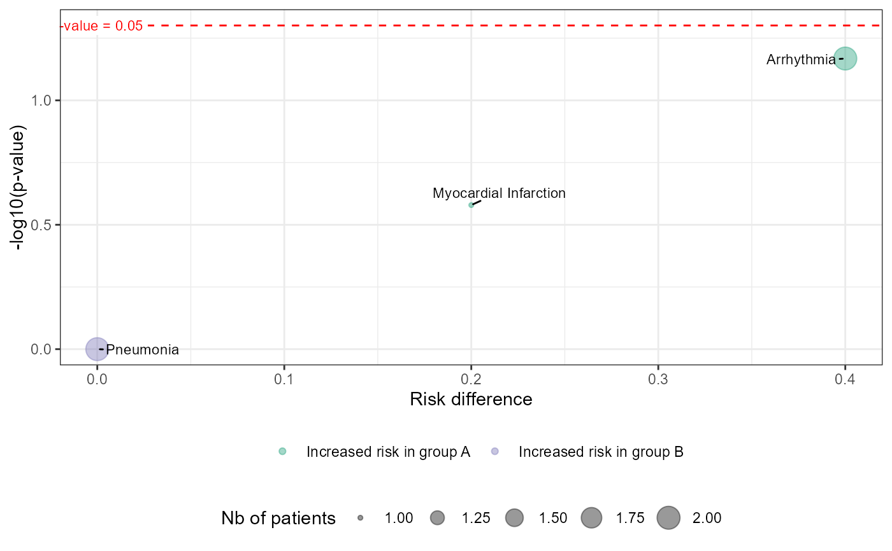

plot_volcano.RdGenerates a volcano plot to visualize the association between adverse events and patient groups.
plot_volcano(
df_pat_grp,
df_pat_llt,
ref_grp = NULL,
colors_arm = c("#1b9e77", "#7570b3"),
size = "nb_pat"
)A data frame of patient groups. Must contain columns USUBJID (patient ID)
and RDGRPNAME (group assignment).
A data frame with USUBJID (subject ID), EINUM (AE ID), EILLTN (LLT identifier), EIPTN (PT identifier), EISOCPN (soc identifier) and EIGRDM (severity grade)
(Optional) A reference group for comparisons. Defaults to the first group in df_pat_grp.
A character vector of length two specifying the colors for the two patient groups in the plot.
Default is c("#1b9e77", "#7570b3").
A character string specifying the metric used for point sizes in the plot. Options are:
"nb_pat": Number of patients (default).
"nb_ei": Number of adverse events.
A ggplot2 object representing the volcano plot.
The function first processes input data using df_builder_ae(), then calculates relevant statistics
such as risk difference (RD) and p-values. The volcano plot displays:
RD on the x-axis (risk difference between groups).
-log10(p-value) on the y-axis (significance level).
Point colors indicating which group has an increased risk.
Point sizes reflecting either the number of patients or events.
A horizontal dashed line at p = 0.05 for significance threshold.
df_pat_grp <- data.frame(
USUBJID = paste0("ID_", 1:10),
RDGRPNAME = c(rep("A", 5), rep("B", 5))
)
df_pat_llt <- data.frame(
USUBJID = c("ID_1", "ID_1", "ID_2", "ID_4", "ID_9"),
EINUM = c(1, 2, 1, 1, 1),
EILLTN = c("llt1", "llt2", "llt1", "llt3", "llt4"),
EIPTN = c("Arrhythmia", "Myocardial Infarction", "Arrhythmia", "Pneumonia", "Pneumonia"),
EISOCPN = c("Cardiac Disorders", "Cardiac Disorders", "Cardiac Disorders",
"Infections", "Infections"),
EIGRDM = c(1, 3, 4, 2, 4)
)
plot_volcano(df_pat_grp, df_pat_llt)
